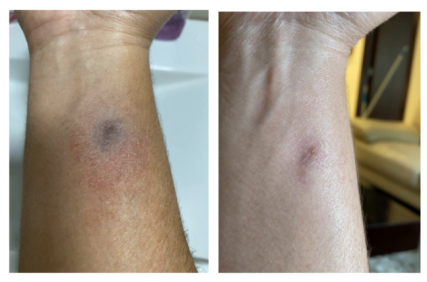
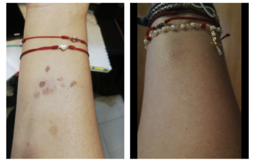

Testimonios
‟
Estoy sorprendido. Con una aplicación el cambio fue notorio; ya hoy es el tercer día y ya desapareció lo que tenía. Estoy encantado
Condición: Rosácea Sexo: Masculino
"Toda la vida he tenido resequedad extrema en mis extremidades, he probado todas las cremas y no me hacían efecto. El aceite me ha funcionado de maravilla. La sensación es increíble."
Condición: Resequedad Sexo: Femenino
Continuamente recibimos mensajes y testimonios de nuestros clientes asegurando que nuestro Aceite de Moringa mejora lesiones y condiciones, tanto en la piel como el cabello.
Condiciones:
Descamaciones
Resequedad
Rosácea
Acné
Mala cicatrización
Irritación y sensibilidad
Lesiones:
Cortaduras
Quemaduras
Picaduras
Manchas
Queloides
Golpes o inflamación
‟
Es excelente, yo tengo biopolímeros y se me inflamaban la zona horrible; tanto que todos los días tenía que tomar antiinflamatorios. Me coloco el aceite y me masajeo y ya no siento más el dolor y baja la inflamación.
Condición: Inflamación Sexo: Femenino

"Seguí varios tratamientos para mejorar la apariencia de la cicatriz, costosos y poco efectivos. Ya resignado, probé con el aceite y comencé a ver un progreso notorio a los pocos días. Al mes, la herida había mejorado drásticamente."
Condición: Picadura de insecto
Sexo: Masculino

Condición: Picadura de insecto
Condición: Picadura de insecto
Sexo: Masculino
